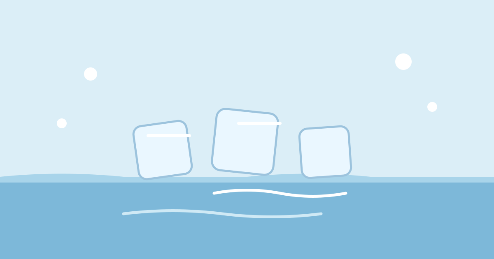

Why Does Ice Float?

Drop an ice cube into a glass of water and it bobs on the surface, most of its bulk hidden below, a small cap above. That is strange. Almost everything else gets smaller and denser when it turns solid: solid wax sinks in melted wax, solid metal sinks in melted metal. Yet solid water floats on liquid water, every time, in every glass, lake, and ocean.
The reason is simple to state and surprising in its consequences: water expands when it freezes. A fixed amount of water takes up more space as ice than it did as a liquid, so the ice weighs less for its size. In the language of physics, ice is less dense than liquid water, and a less dense object floats on a denser liquid. That one fact shapes winters, protects fish, and even helps keep the planet's climate stable.
Most Things Shrink When They Freeze. Water Does Not.
When most liquids cool, their molecules slow down and pack more closely together, and the frozen solid packs tighter still, so it sinks. Water follows this pattern at first: cooling toward 4 degrees Celsius, it contracts and becomes slightly denser, just like other liquids.
Below 4 degrees, water changes its behaviour. Instead of continuing to contract, it starts to expand. By the time it reaches 0 degrees and freezes, it has expanded by about 9 percent compared with its volume at 4 degrees. That is why a bottle of water left in a freezer can bulge or burst, why ice cubes rise in a drink, and why frozen pipes can split in winter. The expansion is not small, and it is not a quirk of one container. It is built into the structure of water itself.
Hydrogen Bonds: The Open Framework of Ice
A water molecule has one oxygen atom joined to two hydrogen atoms in a bent shape. The oxygen end carries a slight negative charge, the hydrogen ends a slight positive charge, so neighbouring molecules attract each other, forming links called hydrogen bonds. In liquid water these bonds form, break, and reform constantly, and the molecules slide past one another in a fairly compact jumble.
As water cools toward freezing, the molecules slow down and the hydrogen bonds hold them in more fixed positions. Each water molecule ends up bonded to four neighbours in a wide, open, honeycomb-like framework, with empty space between the molecules. That open framework takes up more room than the compact jumble of the liquid. The same number of molecules now occupies more space, so the ice is less dense. It is a little like the difference between a crowd of people standing shoulder to shoulder and the same people holding hands at arm's length in a circle: the circle takes up more floor space.
Why Only a Little Ice Shows Above the Water
Ice is only slightly less dense than water, about 0.92 grams per cubic centimetre against 1.00 for liquid water at 4 degrees. That means about 92 percent of a floating piece of ice sits below the surface, and only about 8 percent pokes out. The familiar tip of an iceberg is the small visible part of a much larger mass below, which is why icebergs are dangerous to ships: most of the hazard is hidden underwater.
The same arithmetic explains why an ice cube sits low in a glass. It has found its balance: the weight of the water it pushes aside matches its own weight. Add salt and the cube floats slightly higher, because salty water is denser. Melt the cube and the level barely changes, because the floating ice already displaced its own weight in water.
Why Lakes Freeze From the Top Down
In autumn, the lake surface cools first. The cooled water becomes denser and sinks, while warmer water rises, until the whole lake reaches about 4 degrees, where water is densest. Further cooling makes surface water less dense, so it stays on top, cools to 0 degrees, and freezes into a surface sheet while deeper water stays near 4 degrees.
That surface sheet is a blanket. Ice conducts heat poorly, so it insulates the water below from the freezing air above. Fish, plants, and other aquatic life survive the winter in that liquid layer under the ice, in water that stays a few degrees above freezing even when the air is far colder. If ice sank, lakes would freeze from the bottom up, filling solid with ice each winter and killing almost everything in them. Spring would have to melt the lake from the top down, and many lakes would never fully thaw. The floating of ice is, quite literally, what makes freshwater life through winter possible.
Why It Matters Beyond Lakes
The same property matters on a planetary scale. Sea ice floating on the ocean reflects sunlight back into space, helping to keep the planet cool, and its seasonal growth and melting move heat and salt around the oceans. When sea ice melts, it does not raise sea levels much, for the same reason a melting ice cube barely changes the level in a glass: floating ice already displaces its own weight in water. Melting ice on land, such as glaciers and ice sheets, is different, because that water is added to the ocean from outside. Keeping those two cases separate is important whenever ice and sea levels are discussed.
Closer to home, freezing water shapes the ground: water seeps into cracks in rock, freezes, expands, and wedges them wider, a slow process called frost weathering that breaks rocks apart and helps form soil. It is the same force that bursts an unprotected pipe on a cold night, when the water inside has nowhere to expand.
Common Misconceptions
One common misconception is that ice floats because it contains air bubbles. Bubbles do make ice cloudy, and they lower its density slightly, but clear ice with almost no bubbles floats just as well. The floating comes from the open crystal framework, not from trapped air. Another is that cold things sink and warm things float, as a general rule. It is true that cold water below 4 degrees is an exception, and that exception is exactly the point: below 4 degrees, colder water is less dense, which is why the coldest water sits at the top of a winter lake.
A third misconception is that ice is simply "lighter" than water in an absolute sense. A large block of ice can weigh far more than a cup of water. Floating depends on density, weight for size, not on total weight. A huge iceberg floats because, size for size, it is lighter than the water it displaces, even though its total weight is enormous.
Frequently Asked Questions
Why are ice cubes cloudy in the middle?
Ice freezes from the outside in, and dissolved air and minerals in the water get pushed toward the centre as the outer layers freeze. They end up trapped in the middle, making it look cloudy. Boiled water that has cooled contains less dissolved air, so ice made from it is often clearer, though rarely perfectly clear.
Why does ice crack and pop when it hits a drink?
The outside of the cube warms and expands while the inside is still very cold, and the stress cracks the ice. The popping sounds are tiny fractures forming as the temperature evens out. It is harmless and stops once the cube reaches the temperature of the drink.
Does ice float in every liquid?
No. Ice floats in water because it is less dense than water. In a liquid denser than ice, such as salty water, it floats higher. In a liquid less dense than ice, such as alcohol, it sinks. Floating always depends on comparing the densities of the solid and the liquid it sits in.
Why does a full bottle burst in the freezer?
Water expands by about 9 percent when it freezes, and a sealed, full bottle leaves no room for that expansion. The pressure builds until the bottle cracks or the cap is forced off. Leaving headroom, or using a container with flexible sides, gives the ice somewhere to go.
Conclusion
Ice floats because water is at its most unusual just before it freezes. Below 4 degrees it expands instead of shrinking, and its molecules lock into an open framework that takes up more space than the liquid. The result is a solid that is slightly less dense than the liquid it came from, so it rises to the surface and stays there.
That small difference in density has large consequences. It keeps lakes liquid under winter ice, shapes landscapes, steadies the climate, and puts the visible tip on every iceberg. The next time an ice cube bobs in a glass, it is worth a second look: a quirk of molecular geometry is quietly doing a great deal of work.